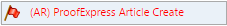

In the Article Dashboard, click items in the Action(s) column to view and work with Tasks and WS Calls.
Workflow Tasks shows you the current in-progress ARTEMIS Task, such as (AR) Comp QC or (AR) Author Corrections. If the text is in red with a red flag,

, then the article is in an error state. ARTEMIS informs Technical Support in the logs.Other entries in this column include:
Workflow Stage shows where the article is in the workflow, such as Initial processing, Composition, Corrections, Composition, Approval, etc. Each stage can involve multiple Workflow Tasks.
The last column, Action(s), may be blank, or may contain links to view the Tasks and WS Calls. Tasks include all of the ARTEMIS workflow tasks associated with the selected article. WS Calls displays incoming and outgoing web service calls for the selected article. Your user permissions determine whether you can view these web service calls.
articlelist.htm | Copyright © 2015 Dartmouth Journal Services All Rights Reserved.